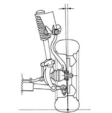
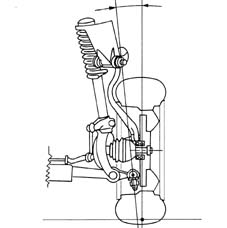
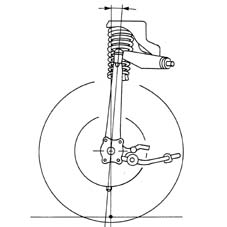
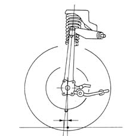
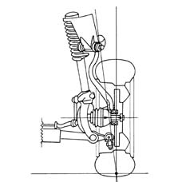

Introduction - FRONT SUSPENSION
- Path
- Descriptions > 44 SUSPENSION AND WHEELS > 4410 FRONT SUSPENSION > Introduction - FRONT SUSPENSION
- Kind
- system description
- Applies to
- all engines; all production periods
- Interactive page
- https://sloeber94.github.io/elrnDB-a156/en/#/3239217
Applies to: all engines; all production periods
DESCRIPTION
Introduction
The superimposed suspension "track control arm" triangles are hinged at the top to the wheel hub . At the base, the lower am is connected to the suspension crossmember and the upper arm to a press-fitted shell.
The advantage of this type of suspension comes from the relative freedom of position for the tops of the two track control arms where the suspension steering axis passes.
For the geometry/typical angles see Op. 4450A
Characteristics of the suspension
Incease in the negative camber of the wheel during the buffer stage
Allows the following:
- compensation for the downwards movement of the vehicle round bends and makes the tyre work at less of an angle in relation to the ground.
With the advantage of:
- increasing the grip of the front axle
- allowing greater transverse acceleration with a suitable balance with the rear axle.

Containing the inclination of the steering axis towards the outside of the vehicle "king pin angle"
Allows the following:
- a reduction in the vertical load on the steering axis
- a reduction in the self-alignment torque of the tyre on the steering axis.
With the advantage of:
- decreasing the effort on the steering wheel during steering when stationary
- improving the gradual load during steering.

High caster of the steering axis towards the front of the vehicle "caster angle"
This allows the following:
- an increase in the inclination of the wheel, during steering, towards the outside (negative camber).
With the advantage of:
- compensating for the downwards movement due to rolling, above all round tight bends.

Containing the variation in the caster angle during the suspension buffer stage.
This allows the following:
- compensation for the reduction due to pitching during braking.
With the advantage of:
- improving the gradualness of the steering and operating force for the steering wheel
- increasing engagement precision round bends.
Advance of the steering axis beyond the centre of the imprint on the ground of the tyre
This allows the following:
- creation of a decisive side force self-alignment effect proportional to the side acceleration with which the bend is taken.
With the advantage of:
- achieving a gradually increasing load on the steering wheel until the grip limit
- facilitating the realignment of the vehicle at the grip limit.

Steering axis position
This steering axis position has been selected to:
- contain the transverse distance between the steering axis and the centre line of the wheel (at the level of the centre of the wheel)
With the advantage of:
- reducing the self-steering effect of disymmetrical forces between the left and right wheels.

Wishbone bases are angled towards the front of the car.
This allows the following:
- suspension stretches during braking
- suspension compressed during acceleration
With the advantage of:
- countering the tendency of the car's front to dip during braking (antidive effect)
- countering the tendency of the car's front to lift during acceleration (antilift effect)
Steering of the wheel diverging during the suspension buffer stage.
This allows the following:
- a lighter driver steering action when entering bends.
With the advantage of:
- improving the smoothness on entering bends, above all on slippery ground.
Rigidity of the track control arm and steering arm hinge bushes
The choice of rigidity for the various bushes makes it possible to:
- cancel any steering any the effect of the side force
- not increase the camber of the tyre in relation to the ground round bends
- increase the longitudinal flexibility of the suspension to the maximum.
The advantages are
- increases the steering precision to a maximum
- increases the grip of the tyre
- increases obstacle aborption comfort.